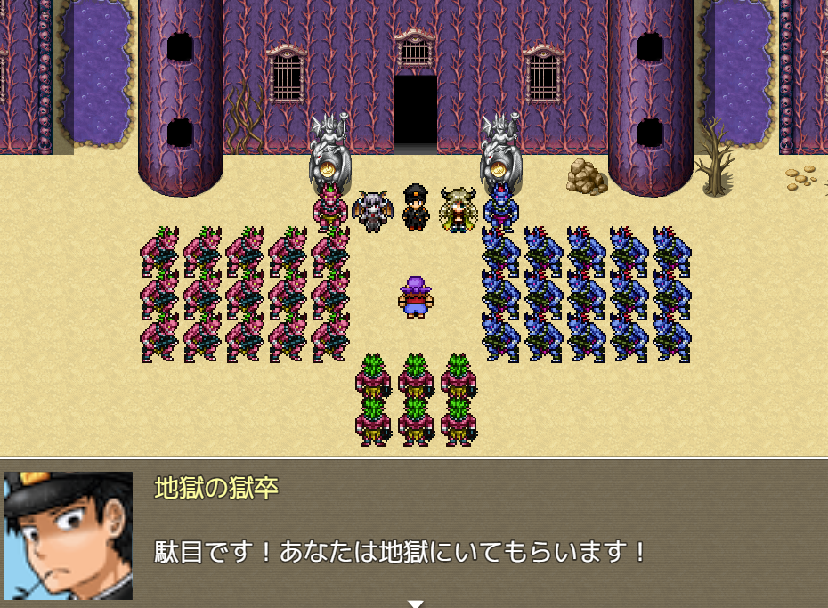

|
 クリックで画像が変わります(計4枚) | |
| ゴメスの地獄大逃亡 | |
| ダウンロード(391.9MB)／感想スレッド | |
| ジャンル | |
| 死にゲー＆逃げゲー | |
| コメント | |
| VIPRPG2024GW No.4ゴメスの大脱獄の地獄行きエンドのその後！所謂IFルート！！ 深都の刑務所に収監されたゴメスは、 脱獄しようとしていたが、刑務所内にあった爆弾を起爆させて死んでしまい、 地獄に来てしまった！ そしてゴメスは、ここでも逃げ回る事に！ 追手は多数。味方は皆無！！ ゴメスの絶望的な大逃亡が始まる！ 捕まれば、袋叩きは避けられないだろう… （なお完成度は１０％程！） | |
| 主催コメント | |
| 野郎共！ゴメス狩りの時間だ！！ | |